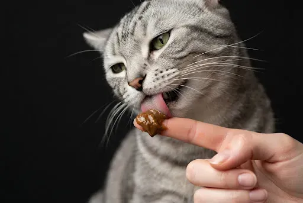
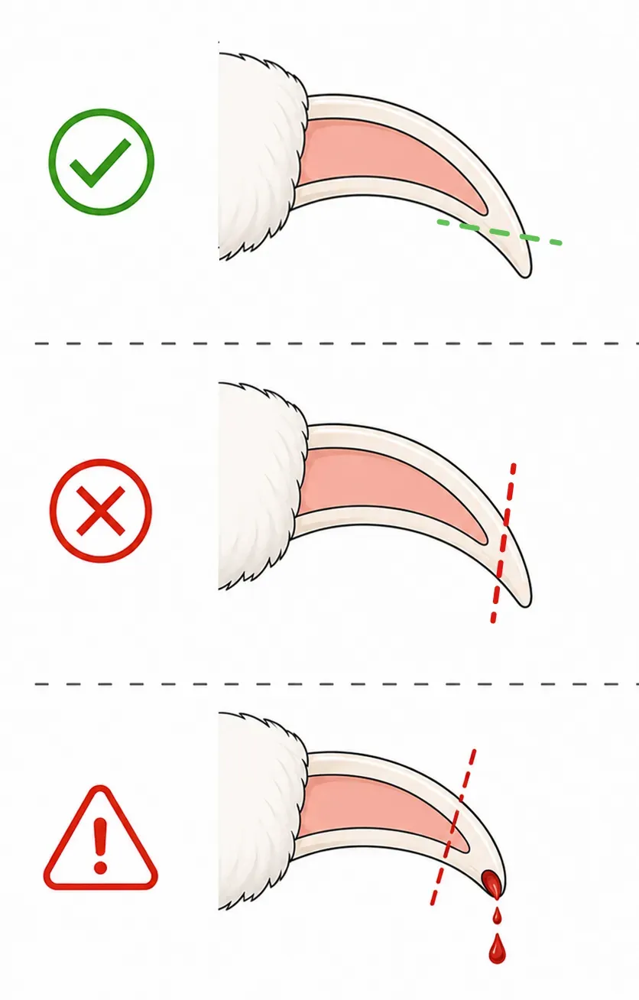
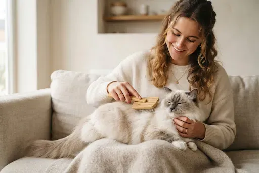

Pielęgnacja
Regularna pielęgnacja pomaga na czas zauważyć zmiany w samopoczuciu kota. Większość zabiegów zajmuje kilka minut, ale ważniejsze jest, by wykonywać je spokojnie i systematycznie.
1Co sprawdzać w domu
- oczy — czy nie ma ropnej wydzieliny, nadmiernego łzawienia i zaczerwienienia;
- nos — czy nie ma nietypowej wydzieliny;
- uszy — czy nie ma silnego zapachu, dużej ilości woskowiny lub ciągłego drapania;
- zęby i dziąsła — nalot, nieprzyjemny zapach, zaczerwienienie;
- skóra i sierść — łupież, strupki, wyłysienia, pasożyty, kołtuny;
- łapy i pazury — pęknięcia, uszkodzenia, zbyt długie pazury;
- waga i kondycja — nagłe zmiany wymagają uwagi;
- zachowanie — apetyt, aktywność, sen, korzystanie z kuwety.

2Codziennie / okresowo
Codziennie:
- świeża woda;
- prawidłowy apetyt;
- czysta kuweta;
- krótkie sprawdzenie stanu kota;
- aktywność i zabawa.
Okresowo:
- czesanie;
- sprawdzanie pazurów;
- czyszczenie zębów;
- oglądanie uszu i oczu;
- kontrola wagi.
3Ważne
Uwaga
Pielęgnacja nie zastępuje wizyty u weterynarza. Nowy guzek, długotrwałe otępienie, odmowa jedzenia, gwałtowna zmiana zachowania, ciągłe drapanie się lub inne nietypowe objawy to powód, by zgłosić się do lekarza.
4Pazury: przycinanie
Zwykle nie trzeba mocno skracać kotu pazurów. Głównym celem jest usunięcie tylko ostrego czubka, bez naruszania żywej części pazura.
Jak się przygotować:
- cążki do przycinania pazurów dla kotów;
- dobre oświetlenie;
- spokojne miejsce;
- przysmak po zabiegu.
Jak przycinać:
1) pozwól kotu spokojnie przyzwyczaić się do dotykania łapek;
2) delikatnie naciśnij poduszeczkę, aby pazur się wysunął;
3) znajdź jasną/różową wewnętrzną część pazura (tzw. żywy miąższ);
4) przetnij tylko przezroczysty, ostry czubek (kilka milimetrów);
5) jeśli kot się denerwuje — obetnij pazury na jednej lub dwóch łapkach i wróć do reszty później.
Jak często: sprawdzaj pazury regularnie, częstotliwość zależy od wieku, aktywności i dostępu do drapaka. Jeśli przypadkiem naruszysz żywą część — może pojawić się krew i ból, użyj preparatu tamującego krwawienie przeznaczonego dla zwierząt i nie kontynuuj zabiegu na siłę. Drapaki nadal są ważną częścią naturalnej pielęgnacji pazurów i zachowania kota.

5Wyczesywanie
Czesanie pomaga usuwać wypadającą sierść i zmniejsza jej ilość, którą kot połyka podczas mycia się.
Korzyści:
- mniej sierści w domu;
- mniej kołtunów;
- łatwiejsza kontrola stanu skóry;
- łatwiej zauważyć pasożyty, podrażnienia i ranki;
- szczególnie przydatne dla kotów długowłosych.
Jak dobrać narzędzie:
- krótka sierść — miękka szczotka lub gumowa rękawica;
- średnia sierść — szczotka o odpowiedniej długości zębów oraz grzebień;
- długa sierść — grzebień i szczotka, które pozwalają dokładnie wyczesać sierść aż do nasady.

Więcej w tym dziale
Informacje w aplikacji pochodzą z ogólnodostępnych źródeł i doświadczeń właścicieli kotów. Nie zastępują konsultacji ani badania u weterynarza. Decyzje dotyczące zdrowia i opieki nad zwierzęciem podejmuje jego właściciel – w razie wątpliwości skontaktuj się z weterynarzem.
Wszystko to jest w aplikacji Cat First
Artykuły, listy kontrolne i pierwsza pomoc w telefonie, nawet bez internetu.